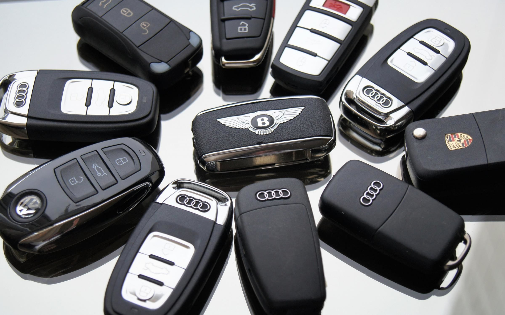

Чим smart-key відрізняється від чіп-ключа

В авто є два основні типи електронних ключів: чіп-ключ (transponder key) і smart-key (keyless entry). Зовнішньо вони відрізняються — чіп-ключ має лезо і вставляється у замок, smart-key більший, без леза (або з прихованим аварійним лезом) і працює без діставання з кишені. Принцип захисту від угону у них однаковий — чіп + блок іммобілайзера. Але smart-key має додатковий радіомодуль 433 МГц, який «спілкується» з авто на відстані 1-3 метри.
Не знаєте який ключ у вас?
Зателефонуйте — скажіть марку, модель і рік
Порівняльна таблиця
| Параметр | Чіп-ключ | Smart-key |
|---|---|---|
| Запуск двигуна | повертом ключа в замку | кнопкою START-STOP |
| Відкриття дверей | лезом або з пульта | торкнувшись ручки (keyless) |
| Дальність роботи | контакт (для запуску) | 1-3 метри |
| Батарейка | не критична для запуску | потрібна, але є аварійний режим |
| Тип чіпа | Texas, Philips, Megamos | той самий + радіомодуль |
| Захист від relay-атаки | не вразливий | вразливий, треба Faraday-пакет |
| Розмір | компактний | більший на 30-50% |
| Ціна виготовлення | 2000-4000 грн | 3500-9000 грн |
| Який авто має | 1998-2014 (масово) | 2008+ (масово) |
Як працює чіп-ключ
- Вставляєте ключ у замок запалювання
- Антена навколо замка живить чіп радіохвилею
- Чіп передає код у блок іммобілайзера
- Блок дозволяє запуск, ви повертаєте ключ — двигун заводиться
Пульт відкриття дверей (на самому ключі) — окрема функція, працює на батарейці і не пов'язана з імобілайзером. Якщо батарейка сіла — двері відкриваєте лезом, а двигун все одно запуститься.
Як працює smart-key
- Підходите до авто з ключем у кишені
- Авто постійно «питає» через 433 МГц: «Ключ поряд?»
- Ключ відповідає: «Так, я — ключ #1»
- Авто визнає вас і розблоковує двері при торканні ручки
- Сідаєте в салон, натискаєте START
- Авто бачить ключ всередині, перевіряє через ту саму антену (як у чіп-ключі) і запускає двигун
Плюси і мінуси smart-key
Плюси:
- Зручність — не треба діставати ключ з кишені
- Можна тримати ключ у сумці, рюкзаку
- Стильніше — кнопка START-STOP виглядає сучасніше
- Менший знос — нічого не вставляється у замок
Мінуси:
- Дорожчий у виготовленні (на 50-100% дорожчий за звичайний чіп-ключ)
- Сів акумулятор у ключі — треба піднести впритул до кнопки START
- Складніше програмувати при повній втраті
На які авто йде smart-key
- Більшість преміум-авто з 2008 року (BMW, Mercedes, Audi, Lexus, Porsche)
- Середній клас з 2012-2014 (Toyota Camry, Mazda 6, Hyundai Tucson)
- Бюджетні з 2018+ (Hyundai Creta, Renault Captur, нові Kia)
- Усі електромобілі (Tesla, Nissan Leaf, новий VW ID.4)
Часті запитання
Чим smart-key відрізняється від звичайного чіп-ключа?
Звичайний чіп-ключ — потрібно вставити у замок запалювання і повернути. Smart-key (keyless) — лежить у кишені, авто розпізнає його по радіо, відкривається кнопкою на ручці і заводиться кнопкою START-STOP. Принцип захисту той самий (чіп + блок іммобілайзера), але smart має додатковий радіомодуль.
Чи можна замінити smart-key на чіп-ключ?
Технічно — ні, якщо авто з заводу з smart-key. Замок запалювання у таких авто не передбачений, є тільки кнопка START. Можна тільки залишити аварійне лезо на smart-key для відкриття дверей.
Що робити якщо сіла батарейка в smart-key?
Двері відкриваєте аварійним лезом (приховане всередині smart-key). Двигун запускаєте — підносите ключ впритул до кнопки START (там є додаткова антена для аварійного запуску).
Потрібен новий smart-key або чіп-ключ?
Зателефонуйте — підкажемо вартість і час